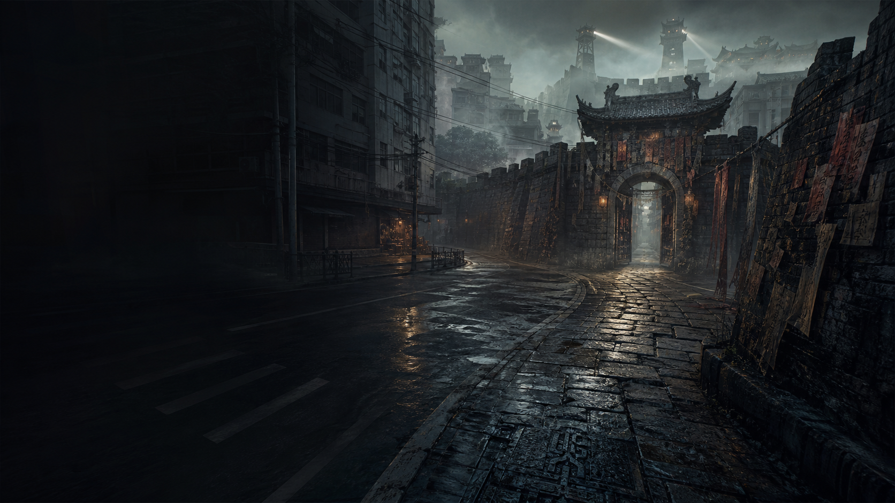

封锁倒计时
3h
目标：抵达内城密道
准备阶段

Witch Keni / AI Game 01
三小时后，雾港会被旧城吞回过去。沈砚只发来一张壁画：画里的失踪君王，长着你的脸。
白塔局断讯，外城、内城、死城一层层压上现代街区，所有出口只剩内城密道。
你从小查不到父母、籍贯和任何亲缘，现在童谣、铜钥和令帖却全都认得你。
想逃出雾港，先弄明白：你是被搭档叫回来的调查员，还是旧城等了很多年的王。
Witch Keni / AI Game 01
雾港在上午九点进入弃城封锁倒计时。白塔局确认「旧城回身」收容失败：现代街区正在被外城、内城、死城三段旧时古城覆盖。三小时后隔离线合拢，留在城里的人会被旧城归档成失踪。